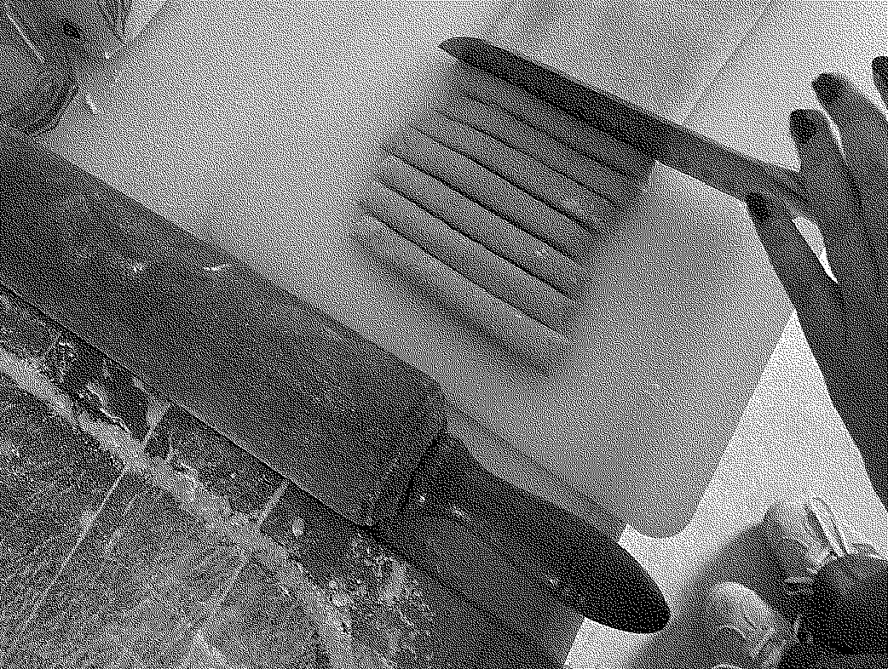
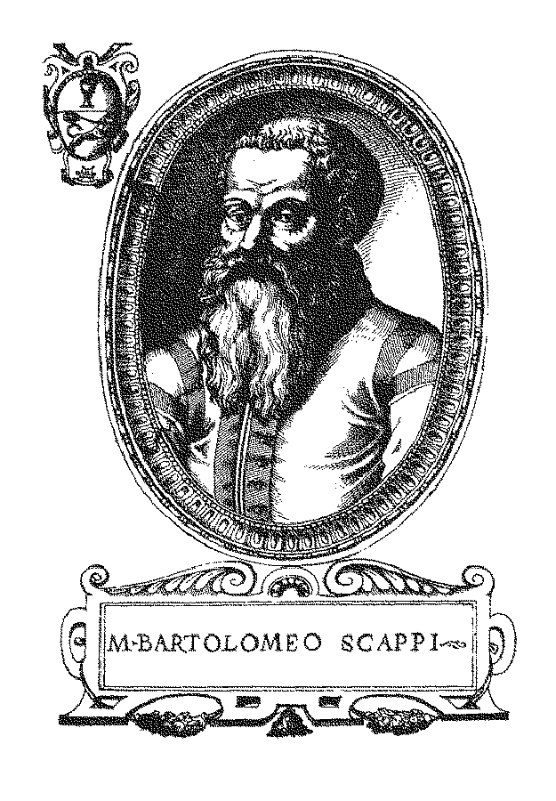
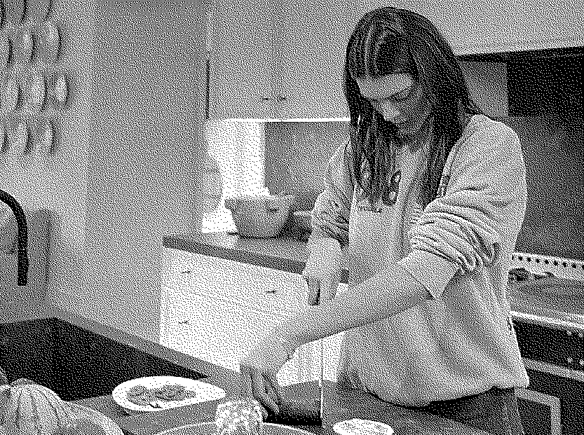
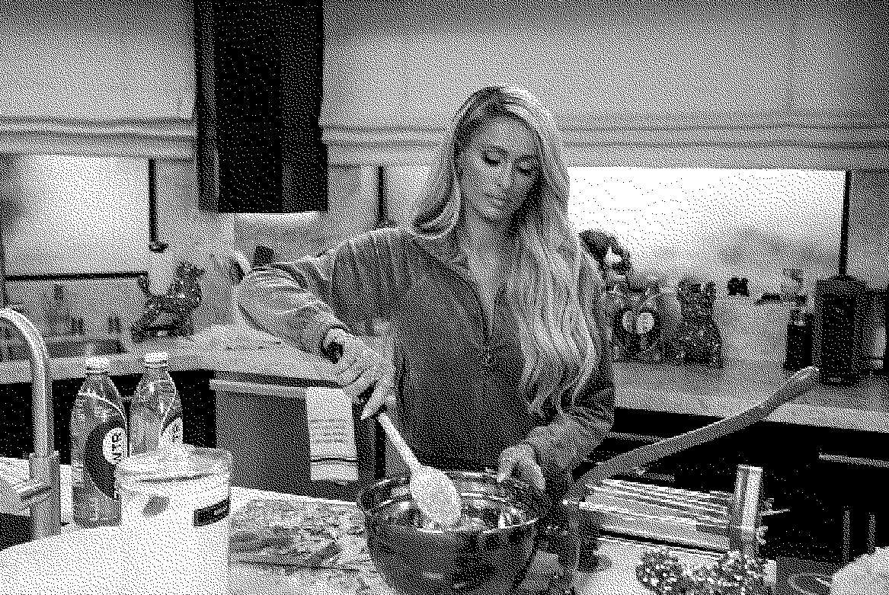
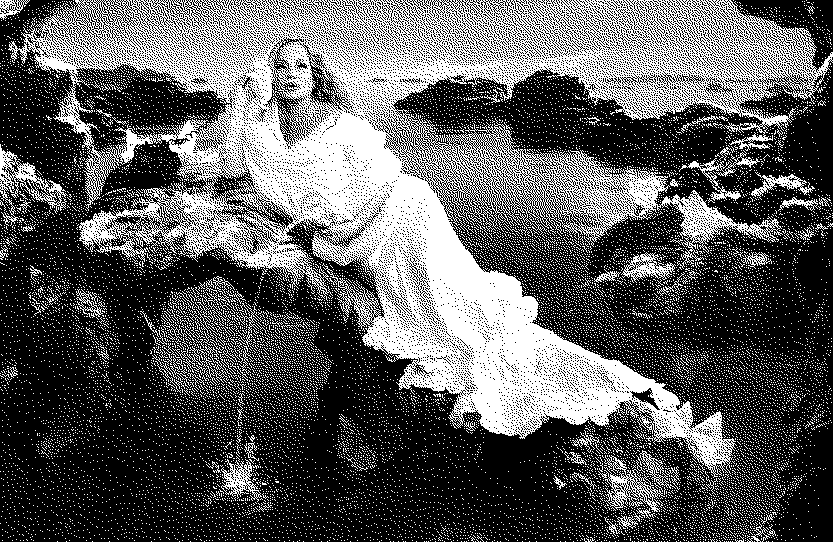
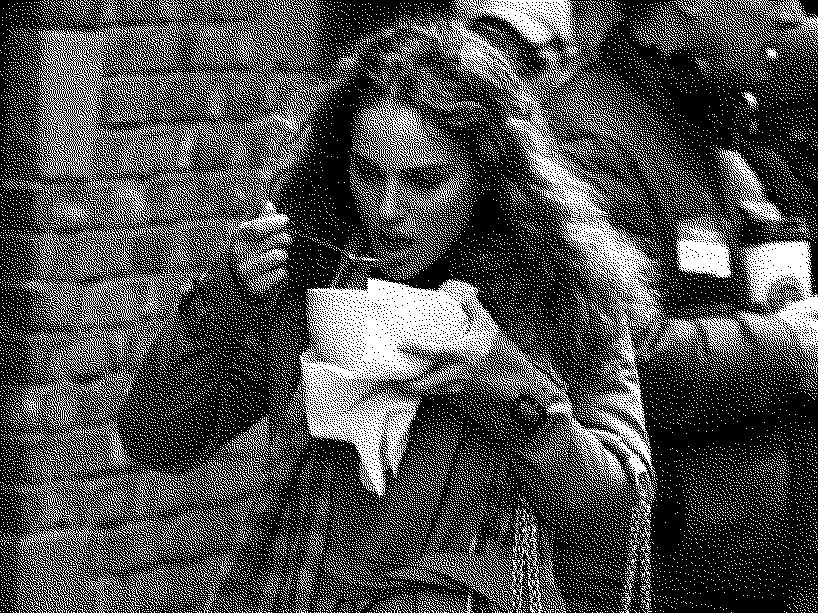

KOKEN VOOR KARDINALEN
info ↓
| INTRODUCTIE | |||
| over het project |

Dit project is een poging tot het vertalen van het boek Koken voor Kardinalen, 2015, naar website vorm. Dit geïnspireerd door de filmadaptatie van Ray Bradbury's Fahrenheit 451, waarin François Truffaut een dystopische samenleving portretteert waarin slechts een handjevol individuen de plicht op zich neemt om levende bewaarplaatsen van kennis en literatuur te worden, Elk van hen verplicht zich om een boek uit het hoofd te leren en voor te dragen voordat het wordt vernietigd door het onderdrukkende regime en vervolgens in de vergetelheid raakt bij de meerderheid van de bevolking. Koken voor Kardinalen is een moderne heruitgave van het renaissance kookboek Opera dell’Arte del Cucinare, 1570, van chef Bartolomeo Scappi. Het boek is vertaald door Ike Cialona en vormgegeven door Studio Frederik de Wal. Inmiddels is het 453 jaar later en dus de hoogste tijd om Scappi’s recepten te herontdekken. Voor mijn herinterpretatie van het boek heb ik ervoor gekozen om een selectie van de recepten en andere teksten uit het boek te gebruiken, ik heb hierbij geprobeerd een selectie te maken die representatief is voor het boek. Daarnaast heb ik ook zelf getracht een aantal van de recepten te recreëren, deze zijn te herkennen aan hun grijze kleur en bevatten naast het recept zelf, door mij geschreven notities over de ervaring van het bereidings-proces. |
||
| inleiding van het boek |
Illustratie van Bartolomeo Scappi.
Bartolomeo Scappi is waarschijnlijk omstreeks 1505 geboren in Dumenza, een bergdorpje in Lombardije, in het uiterste noorden van Italië op een smalle strook land tussen de oostelijke oever van het Lago Maggiore en de Zwitserse grens. Over de eerste helft van zijn leven weten we niets. Mogelijk is hij naar Milaan getrokken, de hoofdstad van het hertogdom dat lange tijd geregeerd werd door de adellijke familie Sforza. Misschien heeft hij zich aan dat luisterrijke hof wel in het koksvak bekwaamd. Hij beschikte in elk geval over een opvallend gedetailleerde kennis van de rivieren en meren in Lombardije en van de aldaar voorkomende vissen. Ook vermeldt hij in zijn kookboek bepaalde Lombardische producten, zoals een speciale gele worst die hij cervelaatworst noemt.
|
||
| bericht van Bartolomeo Scappi aan de heer Don Francesco Reinoso | Aan de doorluchtige en hoogeerwaarde heer Don Francesco Reinoso, hofmeester en kamerheer van Zijne Heiligheid Paus Pius de Vijfde.
Het is een vanzelfsprekende plicht van de mensen, mijn doorluchtige heer, elkaar te helpen door de vruchten van de eigen arbeid in dienst te stellen van het algemeen nut en anderen te laten delen in wat men geleerd heeft door studie of ervaring, opdat zij profijt kunnen hebben van ander- mans kennis, daar niet iedereen in de gelegenheid is om zelf alles te leren wat men moet kunnen en weten in een mensenleven. Het is dus terecht dat wij degenen die hun ervaringen geheim houden en niet alleen weigeren om ze schriftelijk openbaar te maken maar er ook in hun persoonlijke kennissenkring angstvallig over zwijgen, van kwaadwilligheid en vijandigheid jegens het algemeen belang betichten. Daarom heb ik, die daarvan niet beticht wil worden, mij onder geen enkel beding willen verzetten tegen de publicatie van het onderhavige werk, toen mij dat gevraagd werd door liefdevolle en verstandige mensen die het aan het publiek wilden presenteren omdat ze oordeelden dat het voor velen nuttig zou kunnen zijn. Maar omdat ik tegenwoordig in dienst ben van Zijne Heiligheid en als zodanig gehoorzaamheid verschuldigd ben aan U, die op eervolle wijze belast bent met de verzorging van de levensbehoeften van een zo hoogstaande heerser, leek het mij passend dat mijn werkstuk de wereld in zou gaan onder Uw bescherming en met Uw naam als schild. Moge U zich verwaardigen het in ontvangst te nemen met de hoffelijkheid die U altijd betoond hebt jegens de schrijver, die U allernederigst de hand kust en zich in Uw welwillendheid aanbeveelt. Uw zeer nederige en zeer toegenegen dienaar Bartolomeo Scappi |
||
| INDEX | |||
Het boek bestaat uit 6 sub-boeken, of wat we vandaag de dag hoofdstukken zouden noemen:
|
|||
| BOEK EEN | |||
| Verhandeling van de schrijver, Bartolomeo Scappi, gericht tot zijn leerling Giovanni | Er is mij menigmaal gesuggereerd door de hoogeerwaarde Kardinaal di Carpi zaliger, onze patroon, dat het mijn taak was jou op te leiden en in de leer te nemen en mijn best te doen om je tot in de perfectie mijn vak bij te brengen. Verlangend om alles te doen wat mijn doorluchtige patroon mij opdroeg voldeed ik bereidwillig aan zijn verzoek, en ofschoon je nog een jonge knaap was liet ik mij door je leeftijd niet weerhouden. Ik heb je altijd als een zoon beschouwd en niet als een knecht, hoewel je mij in die hoedanigheid was toegewezen, en ik heb altijd mijn opperste best gedaan om een kundige en intelligente vakman van je te maken, opdat na mijn dood al mijn inspanningen, alle ervaring die ik heb opgedaan in dienst van de doorluchtige heer Hora, dankzij jou niet verloren zouden gaan. Omdat ik besef dat je op de leeftijd bent gekomen waarop je het goede van het verkeerde kunt onderscheiden (door de moeite die ik heb gedaan om je op te voeden en te onderrichten), heb ik besloten, uit liefde voor de bovengenoemde Kardinaal zaliger en uit liefde voor de hoogeerwaarde heer Don Francesco Reinoso, de persoonlijke keukenmeester van onze patroon, die ons al het goede verschaft dat wij hebben, je volledig in te wijden in de wijze waarop je je moet gedragen tijdens de uitoefening van die taak, opdat je op kundige wijze elke doorluchtige heer zult kunnen dienen en degene tot eer zal strekken die zich zoveel inspanning heeft getroost om je op te leiden, uit respect voor de dankbaarheid die jij en ik beiden verschuldigd zijn aan de hoogeerwaarde heer Alessandro Casale voor de steun die hij ons altijd gegeven heeft bij alles wat wij ondernamen en voor de goedgunstigheid waarmee hij altijd tot iedereen over ons gesproken heeft, en uit respect voor de voornoemde Don Francesco die jou om mijnentwille zeer toegenegen is. Om alle voornoemde redenen zal ik je zo kort mogelijk in deze vijf boekdelens een overzicht geven van de kunst en de kennis van een meester-kok, terwijl ik je verzoek om hier nooit van af te wijken, omdat ik uit ervaring weet dat zo'n overzicht onmisbaar is voor wie perfectie in dit vak wil bereiken en er eer in wil behalen. Welnu, in het eerste boek zul je een samenvatting vinden van de vakkunde van een meester-kok, aangevuld met enkele andere bijzonderheden en omstandigheden die van pas komen bij de uitoefening van zijn taak. In het tweede boek lees je over de procedure die je moet volgen bij het bereiden van verscheidene en verschillende gerechten van zowel gevogelte als viervoetige dieren in het daartoe geschikte seizoen, en over de bereiding van diverse geleien en sauzen. In het derde, dat over voedsel op vleesloze dagen, vigiliedagen en vastendagen handelt, vind je aanwijzingen voor het bereiden van verschillende visgerechten en een verhandeling over de aard van de vissen en het seizoen waarin ze verkrijgbaar zijn. In het vierde vind je een beschrijving van de bereiding van verscheidene deegwaren. Het vijfde en laatste boek zal je zeer van nut zijn als opsomming van de voorschriften waaraan je je moet houden bij het opmaken en het aanreiken van de gerechten (nadat ze bereid zijn) aan de heren keukenmeesters, en bij het zorgen, tijdens een conclaaf, voor de doorluchtige en hoogeerwaarde Kardinalen, in en buiten de Kapel, en over het gebruik van het keukengereedschap dat bij die gelegenheid behoort, zoals je zult zien op de afbeeldingen en tekeningen van drie verschillende keukens en het meubilair en keukengereedschap dat gebruikt wordt tijdens een conclaaf. |
||
| §1 | OVER DE WERKOMSTANDIGHEDEN DIE NOODZAKELIJK ZIJN VOOR DE MEESTER-KOK | boek een | - |
| verhandeling |
Het is nodig, naar ik door lange ervaring en in de loop van veel tijd heb begrepen, dat een vakkundige en competente meester-kok die streeft naar een goed begin, een beter middendeel en een best einde, en die altijd eer wil behalen met zijn arbeid, te werk gaat als een bedachtzame architect die na het maken van een goede tekening een stevige fundering legt en daarop een nuttig en fraai bouwwerk plaatst waarmee hij de wereld verblijdt. De tekening van de meester-kok is de mooie en solide vakkunde, gebaseerd op ervaring, waarover hij in die mate moet beschikken dat hij eerder de taak van de keukenmeester zou kunnen overnemen dan de keukenmeester die van hem. Ook moet hij zijn best doen om de algemene en bijzondere eetlust te bevredigen met bijzondere spijzen, en die spijzen moeten zowel smakelijk zijn als aangenaam en welgevallig voor het oog met hun mooie kleuren en hun fraaie presentatie. Het eerste fundament waarop hij hoofdzakelijk moet kunnen vertrouwen is de kennis van en de ervaring met de verschillende grondstoffen, opdat hij (wanneer er grondstoffen ontbreken die door omstandigheden of het seizoen nergens verkrijgbaar zijn) gerechten kan bereiden met een ander ingrediënt dat de plaats of het seizoen hem wel kan bieden en daarmee onberispelijke en welvoorziene maaltijden kan opdienen bestaande uit de beste en benodigde ingrediënten. Ook moet hij, om de kwalificaties vakkundig en ervaren te verdienen, alle soorten vlees en vis kennen en alle andere zaken die hij dagelijks in zijn keuken vindt. Hij moet elk viervoetig dier en elke vis in stukken kunnen delen en alle zeevissen en zoetwatervissen kunnen onderscheiden, en weten welke delen en ledematen geschikt zijn om gebraden of gekookt of op een andere manier toebereid te worden. Hij moet weten hoe lang vlees moet versterven en hoe het bewaard kan worden en welke delen het meest aan bederf onderhevig zijn, het duurzaamst zijn, het smakelijkst of het lichtst verteerbaar zijn. Hij moet ook zoal niet geheel dan tenminste goeddeels bekend zijn met alle soorten specerijen die in de keuken nodig zijn en hij moet de hoedanigheid en de smaak kennen van alle vleessappen, zowel vet als mager, en van alle soorten fruit en kruiden, en weten in welke seizoenen ze beschikbaar zijn, want dat is dikwijls nodig. Hij moet kwiek, geduldig en bescheiden zijn in alles wat hij doet, en zo bedaard als maar mogelijk is, want wie niet bedaard is wordt ongeduldig en neemt niet de tijd om goed te proeven. Hij moet de eer van zijn werkgever, samen met de zijne, en het belang van zijn werkgever meer dan alle andere dingen laten tellen. Hij moet over een groot aanpassingsvermogen beschikken, zodat hij verschillende alternatieven kan bedenken wanneer een bepaald ingrediënt niet voorhanden is. Bovenal moet hij, naast alle andere voornoemde zaken, de hygiëne in acht nemen, ook wat betreft zijn eigen verschijning. Hij moet ervoor zorgen dat hij zijn medemensen niet alleen behaagt met zijn gerechten maar ook met zijn vlekkeloze en prettige voorkomen. Hij moet zich inspannen om zich zo snel mogelijk op de hoogte te stellen van de aard en de hoedanigheden van de vorst of heer bij wie hij in dienst is en om zich zo goed mogelijk aan hem aan te passen. Hij moet zijn aandacht niet laten verslappen en niet op zijn assistenten of andere bedienden vertrouwen, altijd indachtig aan het oude spreekwoord: wie gauw gelooft is gauw bedrogen. |
||
| §2 | OVER DE PLAATS, DE VORM EN DE INRICHTING VAN EEN KEUKEN EN OVER HET BENODIGDE KEUKENGEREEDSCHAP | boek een | - |
| verhandeling |
De kok moet in staat zijn een keuken te ontwerpen en in te richten waarin maaltijden bereid kunnen worden zowel voor zijn patroon als voor de gehele huishouding. Ook is hij verantwoordelijk voor de aanschaf van al het benodigde keukengereedschap, waarover ik het in deze paragraaf ga hebben. Ten eerste vind ik dat de keuken zich in een afgelegen en niet openbaar gedeelte van het gebouw moet bevinden. Dat is zo om diverse redenen, vooral om niet gestoord te worden door het heen en weer geloop van mensen, en voor de veiligheid, en om geen hinder te veroorzaken in nabijgelegen ruimtes met het rumoer dat men noodzakelijkerwijs in een keuken maakt. Ze moet zich bij voorkeur op de begane grond bevinden, niet op een hogere verdieping, en ze moet bovenal vrolijk zijn, en luchtig, en goed geproportioneerd. De haard moet groot zijn, met een ruime schoorsteenpijp en een brede kap die gesteund wordt door ijzeren ankers en bouten, met een paar ijzeren dwarsstangen. lets lager zijn ijzeren beugels in de stenen muur verankerd voor de kettingen waaraan de kookketels heen en weer geschoven kunnen worden. Nabij de haard moeten twee soorten muurtjes staan. Op het ene worden de kookpotten en bakpannen neergezet, want het heeft openingen aan de voorkant waarin men gloeiende kolen legt waarop spijzen gestoofd of warm gehouden worden. Het andere is van binnen gewelfd, drie span breed en vier span lang.
|
||
| §3 | OVER HOE MEN DE KWALITEIT VAN OLIJFOLIE ONDERSCHEIDT EN HOE MEN HAAR BEWAART | boek een | - |
| verhandeling |
Voor zover ik heb kunnen vaststellen zijn er veel soorten olie: krachtige en milde, zware en lichte, troebele en heldere, groene en gekleurde. De dikke, milde soort is beter voor gebonden en dunne soepen dan om te bakken en de minder vette, lichter gekleurde olie is geschikter om in te bakken dan de andere soorten. De groene soorten, geperst uit de beste en als eerste geselecteerde olijven, zijn de allerbeste. Olie die naar geel zweemt is vaak zwaar. Proefondervindelijk zal men merken dat olie die tijdens het bakken een beetje schuimt niet erg goed is, net als olie die spettert. Alleen olie die zich laat verwarmen zonder in beweging te komen en die niet onprettig ruikt is goed. Dat geldt voor alle oliesoorten. Om olie te zuiveren moet men haar in een bakpan verwarmen. Als ze goed warm is legt men er een in een stukje brood of een klontje rauw deeg in en laat dat twaalf minuten liggen. Het brood of deeg trekt alle ongerechtigheden en onprettige geuren naar zich toe en de olie is gezuiverd.
|
||
| §4 | OVER HOE MEN DE KWALITEIT VAN REUZEL ONDERSCHEIDT EN HOE MEN HEM BEWAART | boek een | - |
| verhandeling |
Reuzel is het gesmolten buikvet of niervet van een vers geslacht en goed gebraden maar niet verbrand varken. Hij moet blank zijn en niet onaangenaam ruiken. Hij is het beste wanneer hij tussen de vier en de twaalf maanden oud is. Hij blijft langer goed wanneer hij licht gezouten is. Dit geldt ook voor het vet van de gans. Om reuzel goed te houden moet men hem bewaren in een houten of aardewerken kruik, op een koele plaats. |
||
| §26 | OVER HOE MEN DE KWALITEIT ONDERSCHEIDT VAN ALLE SPECERIJEN DIE IN DE KEUKEN WORDEN GEBRUIKT | boek een | - |
| verhandeling |
Ik weet uit ervaring dat alle soorten specerijen die niet langer dan een jaar bewaard zijn en een aangename geur hebben, veel beter zijn en effectiever in elk gerecht dan de oudere soorten. Voor het geval dat men een aantal specerijen wil mengen voor gebruik naar eigen keuze in diverse gerechten, vermeld ik hoeveel er van elke soort in een pond van dat mengsel gaat: kaneel 4 ons, kruidnagelpoeder 2 ons, gemberpoeder 1 ons, nootmuskaat 1 ons, paradijskorrels 1/2 ons, saffraan 1/2 ons, suiker 1 ons. |
||
| §29 | OVER ALLE SOORTEN VIERVOETIGE DIEREN, TAMME EN WILDE, DIE GEVILD OF MET WATER OF VUUR ONTHAARD MOETEN WORDEN | boek een | - |
| verhandeling |
Ik weet uit ervaring dat het merendeel van de in de keuken bereide viervoetige dieren onmiddellijk na de slacht, als ze nog warm zijn, met behulp van warm water onthaard kunnen worden. Tamme varkens en wilde zwijnen kunnen met vuur onthaard worden, maar ossen, kalveren, hamels, geiten, herten, hazen, damherten, grote stekelvarkens en beren moeten gevild worden. Als deze dieren echter jong zijn en nog gezoogd werden, kunnen ze met warm water onthaard worden, net als de kop van het kalf of het geitenkalf en de poten van de hamel. |
||
| §43 | IJZEREN KEUKENGEREEDSCHAP | boek een | - |
| overzicht |
|
||
| BOEK TWEE | |||
| Waarin het gaat over diverse bereidingswijzen van het vlees van zowel viervoetige dieren als gevogelte | - | ||
| §1 | OVER HET BEREIDEN VAN EEN OSSENKOP OP VERSCHILLENDE MANIEREN | boek twee | - |
| recept |
Hoewel het schijnt dat de ossenkop niet veel gegeten wordt en al zeker niet door fijnproevers, kan men hem toch op diverse wijzen bereiden. Ik vind dat zo'n kop erg smakelijk is in het juiste seizoen voor ossenvlees, dat in de herfst begint en tot eind februari duurt. Dat is zo omdat oudere ossen zich in het voorjaar dik eten aan jong gras en in de winter aan notenoliekoeken en lijnzaadkoeken. Het seizoen voor rundvlees begint eind mei en duurt tot eind september, evenals het seizoen voor het vlees van gespeende kalveren. In die maanden kan men een koeienkop of kalfskop onmiddellijk na de slacht van het dier toebereiden. Nadat de kop gevild en gespleten is en meermalen in steeds weer schoon water gereinigd, kan hij gekookt worden in water, samen met wat ham of niet-ranzig saucijzenvlees. Nadat de kop gekookt is, wordt hij warm opgediend, gegarneerd met een knoflooksaus of een zoet- zure vruchtensaus. Maar men kan ook naar believen een fricassee maken van de betere delen, dus de punt van de snuit, de hersens en de ogen. Die zal veel smakelijker zijn wanneer de kop afkomstig is van een niet al te oud dier. En wanneer de betreffende betere delen eerst goed gekookt en vervolgens gebakken zijn, kunnen ze opgediend worden met een pittige saus van kippenlevertjes of een zoet-zure saus. |
||
| §16 | OVER HET BEREIDEN VAN DE POTEN VAN EEN OS OF EEN KOE | boek twee | - |
| recept |
De poten dienen onmiddellijk na de slacht gekookt te worden, in tegenstelling tot het andere vlees, dat bestorven moet zijn. Ze vergen een veel langere bereidingswijze dan alle andere delen van het rund. Daarom worden ze meteen nadat het rund gevild is en van zijn hoeven is ontdaan, in verscheidene stukken gesneden die in de kookpot passen. Men kookt wat ham met ze mee en als de bouillon goed afgeschuimd is voegt men er een beetje azijn aan toe, en een beetje witte wijn, en de gebruikelijke specerijen, en wat saffraan, alles in een hoeveelheid naar keuze. Men dekt de kookpot af met een deksel dat men met deeg verzegelt en laat het vlees ongeveer vijf uur lang, afhankelijk van de leeftijd van het dier, heel zachtjes sudderen op de gloeiende houtskool, ver van de vlammen. Als het gaar is, kan men het warm opdienen met de ham. Van de bouillon kan men een Lombardische soep maken. Als saus geeft men er knoflooksaus bij, of zoetzure vruchtensaus, of groene saus, afhankelijk van het seizoen. |
||
| §70 | OVER HET BRADEN AAN HET SPIT VAN EEN HAMELBOUT IN ZIJN GEHEEL | boek twee | - |
| recept |
Om smakelijk te zijn moet de bout afkomstig zijn van een jonge, vette hamel. Als hij afkomstig is van een oud dier moet men hem laten besterven en als men niet de tijd heeft om hem te laten besterven, bewerkt men hem met een knuppel. Daarna pikeert men hem met kruidnagels en knoflook, steekt hem aan het spit zonder hem te wassen en laat hem gaar worden, terwijl men het vet opvangt dat van hem afdruipt. Als hij gaar is, dient men hem op met een sausje van rozenwaterazijn, suiker of ingekookte most, vermengd met het vet dat van hem afgedropen is toen hij gebraden werd.
|
||
| §130 | OVER HET BEREIDEN VAN EEN DUIF OP EEN ANDERE MANIER | boek twee | - |
| recept |
Nadat de duif geplukt en leeggehaald is, snijdt men de kop, de poten en de vleugelpunten eraf. Als men er de voorkeur aan geeft om hem te vullen, volgt men de aanwijzingen voor het bereiden van een kapoen in paragraaf 117. Men kookt de duif in water met zout of stooft hem op een van de manieren waarop in paragraaf 128 een jong haantje gestoofd wordt. Maar als men de duif eerst wil ontbenen voordat men hem vult, volgt men de aanwijzingen in paragraaf 122 over het ontbenen van een kapoen. Als de duif ontbeend, gevuld en voorgekookt is, kan men hem vierentwintig uur laten rusten in een marinade, bestaande uit azijn, suiker, witte wijn, korianderzaad, peper, zout, kruidnagelpoeder, nootmuskaat en kaneel, en hem daarna met meel bestuiven en bakken in gesmolten reuzel. Vervolgens dient men hem warm op met een saus, gemaakt van dezelfde marinade, waarin rozijnen of muskaatrozijnen zijn meegekookt.
|
||
| §173 | OVER HET BEREIDEN VAN TAGLIATELLE | boek twee | 16.09.23 |
| recept |
Kendall Jenner die een komkommer snijdt.
Men vermengt twee pond bloem met drie eieren en lauw water, kneedt het deeg een kwartier lang op een houten tafel, rolt het met een deegroller uit tot een dunne plak en laat die even drogen. Met de deegsnijder snijdt men de onregelmatige randen eraf. Als het deeg droog is, maar niet zo droog dat het gaat barsten, strooit men er gezeefde bloem over om het minder plakkerig te maken. Vervolgens neemt men de deegroller en rolt, te beginnen aan de ene kant, de hele plak deeg losjes om de deegroller. Daarna trekt men de roller uit het opgerolde deeg en snijdt dat overdwars met een breed, dun mes in repen. Als het deeg gesneden is, rolt men de de repen in de lengte uit en laat ze even drogen. Daarna verwijdert men met behulp van een zeef het overtollige meel. Men kookt de tagliatelle in een vette vleesbouillon of in melk met boter en als ze gaar zijn dient men ze warm op, bestrooid met kaas, suiker en kaneel.
|
||
| notities | Dit is het tweede recept uit het boek dat ik probeerde: tagliatelle.
Off to a strong start; duidelijke hoeveelheden en instructies voor het bereiden van het deeg, yay! Dit was de eerste keer dat ik zelf pasta maakte en het pakte verrassend goed uit. Ik moest de instructie over het rollen van het deeg rond een deegroller en het doorsnijden ervan een paar keer opnieuw lezen om ze volledig te begrijpen. Het deeg leverde een royale hoeveelheid tagliatelle op en ik moest creatief aan de slag om voldoende ruimte te vinden in de keuken om alle strengen te laten drogen. Ik heb ervoor gekozen om de tagliatelle in een groentebouillon te koken in plaats van in een vlezige en serveerde hem met kaas, kaneel en suiker, zoals voorgesteld in het recept. Ik deelde de tagliatelle met mijn vader en stiefmoeder en we waren allemaal een beetje sceptisch over de toppings, maar het bleek verassend lekker. De combinatie van kaneel en kaas is er een waar ik zelf niet aan had gedacht, maar het was vreemd genoeg een goede combi. Persoonlijk geef ik de voorkeur aan dit recept zonder suiker of met een klein scheutje ervan. Ik ga dit zeker nog een keer maken. |
||
| §180 | OVER HET BEREIDEN VAN TORTELLINI GEVULD MET VERSE DOPERWTEN OF BONEN | boek twee | 17.09.23 |
| recept |
 Paris Hilton die aan het koken is.
Nadat men doperwten of bonen voorgekookt heeft in vleesbouillon, stampt men de benodigde hoeveelheid in een vijzel fijn en wrijft haar door een vergiet of zeef. Daarna voegt men eierdooiers toe, plus peper, kaneel, kruidnagelpoeder, nootmuskaat, suiker, een paar fijngehakte en in boter gefruite sjalotjes, geraspte Parmezaanse of vette Romeinse kaas en een beetje verse ricotta of bufferkaas. Vervolgens steekt men tortellini uit uit een pak deeg, zoals hierboven is beschreven, vult ze, kookt ze in een goede bouillon en dient ze op met kaas, suiker en kaneel. En als men ze wilt vullen met gedroogde peulvruchten, moet men die eerst laten weken en daarna lang laten koken. |
||
| notities | Recept 3: tortellini gevuld met verse erwten of bonen.
Pasta, pasta, pasta! Kan er ooit genoeg pasta zijn? Ik had redelijk wat vetrouwen om hieraan te beginnen na de successen van de vorige dag. Ik maakte dit recept in samenwerking met mijn stiefmoeder en gaf haar de opdracht om de voorgekookte erwten, wij gebruikten diepvrieserwten, door een zeef te wrijven, wat behoorlijk wat geduld bleek te vergen. Ik moest opnieuw een aantal recepten teruggaan om de instructies voor het maken van het deeg te vinden; recept §177 op pagina 102 (...rolt men een vrij dunne plak deeg uit, gemaakt van bloem, rozenwater, zout, boter, suiker en lauw water. Met een deegwiel of deegsteker snijdt men grote of kleine tortellini uit het deeg, die men vervolgens vult…). Ik moest de hoeveelheden uiteraard een beetje gokken hier, maar het lukte om een mooie partij deeg te produceren, die ik vervolgens in kleine vierkantjes sneed. Ik moet wel toegeven dat ik een klein beetje vals gespeeld heb en naar een YouTube-video van een Italiaanse nonna die uitlegde hoe je tortellini vouwde heb gekeken. Na het vouwen hebben we de tortellini gekookt en geserveerd met kaas, suiker en kaneel, easy peasy! Ps. ik word nu officieel het soort persoon dat graag kaneel bij alles eet. Van de overgebleven tortellinivulling heb ik uiteindelijk een soort omelet gemaakt en die geserveerd met, je raadt het al, kaneel! Ook dit was weer verrassend lekker. |
||
| §187 | OVER HET BEREIDEN VAN EEN BRIJ VAN KASTANJEMEEL | boek twee | - |
| recept |
Men neemt vier pond kastanjemeel, dat zoeter is dan alle andere meelsoorten en minder vezelig. Voorts neemt men vier maatkruiken vette geitenmelk of koemelk en brengt die aan de kook in een kookpot nadat men het meel erdoor geroerd heeft. Men bereidt de brij volgens de aanwijzingen in paragraaf 162 over de bereiding van blanc-manger. Eventueel kan men er suiker aan toevoegen, maar men moet vooral niet vergeten om er voldoende zout in te doen. Als de brij gaar is, bestrooit men hem met suiker en kaneel en dient hem naar smaak warm of koud op. Men kan hem ook laten afkoelen en in plakken snijden en die bakken in reuzel of boter en eveneens met suiker en kaneel opdienen.
|
||
| BOEK DRIE | |||
| Over de aard en het nut van vis | Aangezien ik tot nu toe geschreven heb over allerlei gerechten voor vleesdagen, waarmee ik voor het grootste grootste deel in de verheven stad Rome ervaring heb opgedaan, zall ik nu niet nalaten te vertellen over gerechten voor onthoudingsdagen en vastendagen, en ik begin met een beschrijving van het uiterlijk, de kwaliteit en het seizoen van enkele vissen die dezer dagen in Rome en in vele Italiaanse streken verkrijgbaar zijn en die bereid moeten worden volgens de aanwijzingen in de desbetreffende paragrafen. Maar voordat ik praat over hun bereidingswijze, lijkt het mij verstandig om over een paar bijzonderheden te spreken die ik dankzij mijn deskundigheid en grote routine in dit vak als wetenswaardig ervaren heb. Het is namelijk zo dat vis uit zee lekkerder is dan vis uit een vijver, en dat vis uit een rivier lekkerder is dan vis uit een meer, en dat vis die nabij een rotsige kust is gevangen lekkerder is dan vis uit kalme wateren, en dat zoutwatervissen die in zoet water hun voedsel komen zoeken verfijnder smaken dan de andere, en dat alle vissen om smakelijk te zijn vooral vers moeten zijn, behalve de steur die, als hij groot is, enige tijd moet rusten voordat hij bereid wordt. Ook moeten alle vissen die gebakken gaan worden of geroosterd of ingelegd in kruiden en azijn, liever van middelmatige grootte zijn dan te groot. Vissen die bestemd zijn om er gelei van te maken moeten in azijn bewaard worden en vissen die gezouten worden gaan levend in het pekelbad. | ||
| §1 | OVER HET UITERLIJK EN HET SEIZOEN VAN DE STEUR | boek drie | - |
| recept |
De steur is een grote zeevis. Hij is lang en bedekt met een huid die min of meer donkergroen van kleur is. Hij heeft vijf zaagvormige lengtestrepen vanaf de kop naar het puntje van zijn staart en onder zijn buik is hij plat en wit. Hij heeft een brede staart met de vorm van een kippenvleugel en heel weinig ingewanden, vooral het mannetje, dat soms vol hom is, zoals het vrouwtje vol kuit is. Zijn lever is witachtig en smaakt zoet. Hij heeft maar één slijmerige darm. Hij heeft geen botten en geen graten en zijn ruggegraat is een buis van kraakbeen waardoor een zenuwstreng zijn kop met zijn staart verbindt. Zijn kop en zijn ogen zijn klein in verhouding tot zijn lengte. Zijn snuit is zo puntig als de sneb van een schip en zijn bek is tandeloos en kaakloos. Hij gebruikt zijn bek meer om te zuigen dan om te eten. Er zitten twee kleine witte tastdraden bij zijn bek, en als de snuit gekookt wordt tikken die kraakbenen uitsteeksels tegen de bodem van de pan en springt de kop op en neer als een Florentijnse bal. Het kraakbeen in de rug doet hetzelfde. Zijn seizoen begint in maart en duurt tot eind augustus, maar als men hem buiten het seizoen ergens vindt is hij het hele jaar smakelijk. Men vangt er veel in Stellata nabij Ferrara, waar de Po zich zo splitst dat de ene arm naar Francolino stroomt en de andere rond de stadsmuren van Ferrara. De steur zwemt van nature tegen de stroom in, en als hij afkomstig is uit een grote rivier is hij veel smakelijker dan wanneer hij op zee gevangen is.
|
||
| §29 | OVER HET BEREIDEN VAN DE KOP VAN EEN OMBERVIS | boek drie | - |
| recept |
Men neemt de kop van een vooral verse ombervis, afgesneden op de manier waarop men dat in Rome doet, dus met een spanbreedte van de romp eraan vast. Dat deel van de romp moet vooral goed geschubd worden. Men wast de binnenkant van de bek, waarin zich piepkleine tandjes bevinden, en de binnenkant van de oren en men kookt de kop in water met zout zoals men een steur kookt. Vervolgens dient men hem in zijn geheel op, bestrooid met peterselie of met bloemen. Er past een witte of groene saus bij. Men kan de kop ook in stukken snijden en koken in water met olie, zout, peper, kaneel, saffraan, kruisbessen of zure druiven en een handvol fijngehakte groene kruiden. Op deze manier kan men ook alle andere delen van de ombervis koken. |
||
| §40 | OVER HET UITERLIJK EN HET SEIZOEN VAN DE ZEEBAARS | boek drie | - |
| recept |
De zeebaars is ook een zoutwatervis. In verschillende steden heeft hij verschillende namen. In Venetië heet hij varolo, in Genua lupo, in Rome spigolo, in Pisa en Florence ragno. In Venetië zijn ze groter dan in Rome. Ze hebben nog grotere schubben dan makrelen en onder hun buik zijn ze wit en hebben ze twee vinnen. Hun staart is niet gespleten en ze hebben twee rugvinnen, een met een punt en de andere zonder. Hun seizoen loopt van begin december tot eind februari, en in die tijd zitten ze vol hom of kuit. Als ze gevangen worden in grote rivieren als de Tiber, de Po en dergelijke, zijn ze zeer smakelijk en zo wit dat ze bijna zilverkleurig zijn. De exemplaren die uit zee of uit de kust- meren komen en een donkere rug hebben zijn minder smakelijk. De kleinsten, die men in de lente vangt, zijn lekker tot eind juli. Men kan ze bakken of roosteren. De groteren kan men in hun geheel of in stukken gesneden, afhankelijk van hun grootte, koken in water met zout, zoals men een steur kookt, nadat men ze schoongeschraapt en leeggehaald heeft. Hun hom en kuit worden afzonderlijk bereid. Men kan ze ook in een Venetiaanse ragout verwerken, zoals men dat doet met de ombervis in paragraaf 31, of in een andere ragout, zoals beschreven in paragraaf 4. En men kan ze koken in een mengsel van wijn, azijn, water en specerijen, zoals de forel in paragraaf 116 gekookt wordt. De middelgrote exemplaren worden gepekeld en gemarineerd zoals de meerforel in paragraaf 122 gemarineerd wordt. En van het vette staartvlees, dat het stevigste is, kan men met graatloze, fijngehakte sardines gevulde viskoekjes maken die aan het spit of op het rooster gebraden worden of in een taartpan gestoofd. |
||
| §101 | OVER HET BAKKEN EN STOVEN VAN PIJLSTAARTINKTVISSEN | boek drie | - |
| recept |
Men neemt kleine pijlstaartinktvissen, verwijdert de graat die ze in hun rug hebben, snijdt hun de ogen uit en controleert de baarddraden zorgvuldig, want die zitten soms vol zand. Men wast ze een aantal malen, waarbij men in overweging moet nemen dat men de baarddraden beter kan verwijderen vanwege het zand. Nadat men ze gewassen heeft, bestrooit men ze met een beetje zout, bakt ze in olijfolie en dient ze warm op, besprenkeld met pomeransensap en bestrooid met peper. Het is raadzaam om in de olie waarin de inktvissen gebakken zijn geen deegwaren te bakken of andere spijzen die blank moeten blijven, omdat tijdens het bakken het blaasje knapt en de vloeistof daaruit de olie donker kleurt.
|
||
| §164 | OVER HET STOVEN VAN ONTBEENDE KIKKERS | boek drie | - |
| recept |
Men neemt kikkers die acht uur in water geweekt zijn, kookt ze voor in vers water, neemt ze uit het hete water en laat ze afkoelen in koud water. Vervolgens snijdt men het vlees van de dijen, legt dat in een stoofpot, samen met wat boter of olie, en stooft het zachtjes met wat fijngehakte sjalotjes. Ook voegt men een beetje van het water toe waarin de kikkers voorgekookt zijn, en kruisbessen of zure druiven, en milde specerijen plus een beetje saffraan, en als laatste een handvol fijngehakte groene kruiden. Als het kikkervlees gaar is, wordt het warm opgediend. En als men er geen fijngehakte sjalotjes aan wil toevoegen, doet men er gestampte amandelen bij, of geraspt brood, om het stoofvocht te binden. Op dezelfde manier kan men kikkers stoven zonder ze eerst te ontbenen. |
||
| §232 | OVER HET MAKEN VAN AUBERGINERAGOUT OP EEN VASTENDAG | boek drie | 21.09.23 |
| recept | Florence Pugh met keukengereedschap
Men schilt de aubergines, kookt ze voor, laat ze uitdruipen, hakt ze fijn en fruit het vruchtvlees met sjalotjes in olie in een aardewerken of vertind koperen kookpot. Vervolgens roert men er water, zout, peper, kaneel en saffraan door, en op het laatst een handvol fijngehakte groene kruiden en een beetje amandelmelk en sap van zure druiven. Als de auberginemassa gaar is, dient men haar warm op, bestrooid met kaneel. En als het geen vastendag is, gebruikt men boter in plaats van olie en losgeklopte eieren, geraspte kaas en specerijen in plaats van amandelmelk. |
||
| notities | Dit recept leek opnieuw redelijk makkelijk maar bleek het eerste gerecht dat totaal mislukte. De textuur was raar en het was gewoon echt niet lekker, ik heb het uiteindelijk weg moeten gooien. Dit recept zou ik dan ook zeker niet aanraden. | ||
| §250 | OVER HET BEREIDEN VAN RODE KIKKERERWTEN | boek drie | - |
| recept |
Men neemt rode kikkererwten, verwijdert alle ongerechtigheden en laat ze weken in schoon, niet te sterk loogwater of in lauw water met een beetje in een linnen doek gewikkelde houtskoolas. Men laat ze zes uur weken op een warme plaats. Daarna neemt men ze uit het weekwater en wast ze met schoon water. Zoals ik zei moet men er goed op letten dat het weekwater niet te veel loog bevat, omdat de kikkererwten zich anders van hun velletjes ontdoen en naar loog gaan smaken. Men neemt ze dus uit het weekwater, wast ze met lauw water en legt ze in een stoofpot in een mengsel van olie, zout, een beetje tarwemeel dat men er met een pollepel door roert en zoveel water dat de kikkererwten er vier vingers of meer onder liggen. Men stooft ze samen met een paar takjes rozemarijn en salie, een hele bol knoflook en een beetje peper en dient ze op in diepe borden. Als men geen meel en geen knoflook in de soep wil, doet men er vlak voordat men haar opdient een hand- vol fijngehakte groene kruiden in.
|
||
| BOEK VIER | |||
| Over de menu’s en de volgorde waarin men de gerechten opdient | - | ||
| §1 | VERVOLG VAN DE VERHANDELING GERICHT TOT LEERLING GIOVANNI | boek vier | - |
|
Aangezien ik je tot nu toe heb getoond hoe men diverse gerechten bereidt voor vette dagen en vastendagen, wil ik niet nalaten dat te doen wat ik je in het eerste boek beloofd heb: je een beschrijving geven van de volgorde waarin en op de wijze waarop je de bereide gerechten moet overdragen aan de heren keukenmeesters; want je zult niet altijd kunnen blijven rekenen op de sympathie en de vriendelijkheid van de hoogeerwaarde Don Francesco Reinoso, de persoonlijke hofmeester van onze heer, of op die van de hoogeerwaarde proost van Mondovì, de heer Giovanni Paldeo, heren die uit sympathie voor mij je allebei graag mogen en die erop vertrouwen dat je alles wat ik je geleerd heb nauwgezet in de praktijk zult brengen. Ik vertel je dit allemaal omdat je vaak te maken zult krijgen met keukenmeesters die als speciale gunst door hun heren tot die rang verheven zijn en niet op grond van de ervaring die ze hebben. Wel is het waar dat de voornoemde heren hun die opdracht niet zouden geven als ze niet kunnen vertrouwen op de deskundigheid en de bekwaamheid van de kok. Daarom heb ik dit boekdeel geschreven, waarin ik je met weinig moeite eraan hoop te herinneren hoe en volgens welke regels een gastmaal georganiseerd moet worden, en tevens hoe je rekening zult moeten houden met de seizoenen, want je hebt altijd gezien hoe de hoogeerwaarde heer Don Francesco verstandigerwijze in de lente zo'n gastmaal laat opdienen op een vrolijke maar tegen wind beschutte plaats, in de zomer op een ruime, beschaduwde plaats waar bronwater overvloedig beschikbaar is, in de herfst op een milde plaats die meer op het oosten dan op het noorden ligt en in de winter in een zaal die getooid is met diverse wandtapijten en verscheidene standbeelden en schilderijen om de gasten te amuseren. De lengte van de tafel moet altijd in de juiste verhouding staan tot de breedte, zodat de bedienden de gerechten gemakkelijk kunnen neerzetten en weghalen en zodat degenen die de spijzen en dranken serveren rond de tafel kunnen lopen zonder de gasten te hinderen. Ik ga echter ook menu's opstellen waarin ik de spijzen noem die men van maand tot maand kan opdienen en die algemeen verkrijgbaar zijn in Italië, en vooral in de stad Rome, en enkele voor- en nagerechten die aangeboden worden op het buffet, het domein van de keukenmeester. Maar zoals ik in het eerste boek al zei: het is altijd eervoller wanneer een kok als keukenmeester kan fungeren dan andersom. Daarom is het op zijn minst nuttig dat ik je onderwijs in het kiezen van de juiste gerechten voor zowel het koude buffet als voor de warm geserveerde gangen.
|
|||
| §2 | DE MENU'S | boek vier | - |
|
MIDDAGMAAL OP 8 APRIL,
WARME GANG
BUFFET MET NAGERECHTEN
Nadat het tafellaken is weggehaald en de handen zijn gewassen, worden er schone witte servetten gebracht.
... MIDDAGMAAL OP EEN VLEESLOZE DAG IN MEI, MET VIER BUFFETTEN EN VIER WARME GANGEN, OPGEDIEND AAN ACHT AANZITTENDEN DOOR ACHT TAFELDIENAARS EN ACHT VOORSNIJDERS. EERSTE BUFFET
TWEEDE BUFFET
EERSTE WARME GANG
TWEEDE WARME GANG
DERDE WARME GANG
VIERDE EN LAATSTE WARME GANG
DERDE BUFFET
Nadat het tafellaken verwijderd is en men de handen heeft gewassen, worden schone servetten rondgedeeld, en zilveren vorken en lepels. VIERDE EN LAATSTE BUFFET
|
|||
| §3 | HET BUFFET | boek vier | - |
|
Als men een van de hierboven beschreven gastmalen wil opdienen, moet het buffet niet alleen voorzien zijn van fijne tafellakens en onderkleden, servetten, zoutvaten, gouden en zilveren messen, vorken en lepels, verschillende soorten kandelabers, gouden en zilveren borden, schotels en bokalen, en borden, schotels en kommen van porselein, majolica en ander aardewerk voor salades, vruchten en andere koude spijzen, maar ook van de hieronder opgesomde zaken, dat wil zeggen van alle mogelijke soorten gekonfijte, gedroogde en op sap bewaarde vruchten, en van geleien bereid van morellen, marasca-kersen en kweeperen en verschillende soorten kweeperenmarmelade, van Napolitaanse en Romeinse amandelkoekjes, van marsepein in verschillende vormen, van pijnboompittenkoekjes en pistachenotenkoekjes, van amandelkoekjes uit Basilicata, andere zoete lekkernijen, koekjes uit Pisa, wafelhoorntjes, kransjes gevuld met dadels, pistachenoten en pijnboompitten, rauwe zoete amandelen, allerlei soorten gedroogde vijgen, allerlei soorten witte gesuikerde amandelen, olijven, allerlei soorten kappertjes, compote van venkel en van diverse vruchten, gedroogde druiven in de vorm van rozijnen, krenten en muskaatrozijnen, geconserveerde druiven, granaatappels, kweeperen, zoete, halfzoete en bittere pomeransen, cederappels, kleine Napolitaanse citroentjes en limoentjes. En van alle soorten peren en appels, van Maartse kazen, Florentijnse geitenkaas, kaas uit Romagna, uit Rome, uit Ligurië, uit Majorca, jonge en oude caciocavallo, verse buffelkaas en andere kazen. En in de lente, de zomer en de herfst van verse schapenkaas in biezen mandjes, dikke room, verse boter, verse ricotta, verse mozzarella en slagroom. En op vleesdagen van koude vleeswaren als saucijzen, mortadella, ham, varkensbuikspek, gezouten ossentong, buffeltong en varkenstong, gezouten rundvlees, gedroogd buikspek en gezouten varkenskeel. Al deze vleeswaren moeten gekookt zijn, hoewel saucijsjes en vette ham soms rauw worden opgediend, in dunne plakken gesneden. Mortadella kan naar believen warm of koud worden opgediend. En er moet een keur staan van grote koude pasteien, gevuld met bokkenvlees, everzwijnenvlees, vlees van wilde speenvarkens, kalfsvlees en vlees van alle andere gebruikelijke tamme en wilde viervoeters. En evenzo van grote koude pasteien met een vulling van tamme pauwen, kalkoenen, kraanvogels, fazanten, patrijzen, bergpatrijzen, tamme kalkoense hennen, kapoenen en ander gevogelte naar keuze. En van grote koude pasteien met een vulling van knoflookworst, ham, buikspek, saucijsjes, mortadella en varkenskeel. En voor vleesloze dagen moet er een voorraad zijn van gezouten tonijnbuikvlees, gerookt tonijnbuikvlees, gezouten zalm, gerookte en in azijn ingelegde haringen, ansjovissen, sardines, gezouten palingen uit diverse meren, steurbuik, tonijnrugvlees, gedroogde harderkuit, kaviaar, in azijn ingelegde goudbrasems en harders, gemarineerde meerforellen, grote gerookte forellen en harders, in bladeren geconserveerde zwarte ombervissen, forellen, zeebaarzen en andere vissen, en gemarineerde moten steur, en grote koude pasteien met een vulling van zoutwatervis zoals steur, tonijn, harder, zeebaars, zwarte ombervis, kleine ombervis, boniet, elft en andere zoutwatervissen, en grote koude pasteien met een vulling van forellen, meerforellen, grote snoeken, grote palingen in Slavonische gelei en andere vissen in gelei.
|
|||
| §4 | OPSOMMING EN BESCHRIJVING VAN HET KEUKENGEREI DAT MEN NODIG HEEFT OP EEN REIS, ZOALS ELKE HOGE HEER DIE ZO NU EN DAN MAAKT | boek vier | - |
|
Nu ik tot zover in deze vier boeken alle bijzonderheden heb vermeld betreffende het bereiden en verschillende gerechten, alsmede een lijst van alles wat zich op en in een buffet moet bevinden, lijkt met mij eveneens nuttig een beschrijving te geven van het benodigde keukengerei voor en de organisatie van een reis in het gevolg van een hoge heer. De meester-kok die er een eer in stelt zijn werk zo goed mogelijk te doen, zal, voordat hij zich op reis begeeft, altijd het lichtste en nuttigste keukengerei kiezen en zich bovenal laten vergezellen door kundige en betrouwbare mensen, dus assistenten, onderkoks, koksjongens, bakkers en flinke jonge sjouwers om de boel in en uit te laden. En elk van hen moet naar gelang van zijn status kunnen beschikken over een rijdier en alle andere noodzakelijke dingen. En de koksjongens die te voet gaan mogen geen gebrek hebben aan schoenen en aan jassen van schapenwol, zoals ze die plegen te dragen aan alle hoven, vooral in Rome.
Al het koperen keukengerei moet apart worden ingepakt, gescheiden van de ijzerwaren. De ijzerwaren die moeten worden ingepakt zijn de volgende:
In de twee hutkoffers worden de hieronder genoemde voorwerpen gepakt:
Spullen die op lastdieren moeten worden geladen:
Als men in de voornoemde reismanden, draagkorven, kisten en pakzadels ander keukengerei wil vervoeren dan wat hierboven beschreven is, is het raadzaam de illustraties te bestuderen waarin een volledig overzicht wordt gegeven van al het keukengerei dat men zowel tijdens een reis als tijdens een verblijf nodig heeft. Dat keukengerei altijd zo over de bagage verdeeld worden dat de helft vooruit reist met de assistent-kok terwijl de andere helft de pleisterplaats blijft; een verdeling die dus van dag tot dag wisselt. Naar eigen goeddunken kan men in de man- den of kisten plaats maken voor een kleine pers voor het maken van bouillon voor een zieke," en voor ijzeren fakkelhouders voor de fakkels waarmee men een ruimte kan verlichten tijdens het avondmaal. De meesterknecht zal onmiddellijk na aankomst op de pleisterplaats aan al zijn ondergeschikten vragen wat ze aan spullen hebben meegebracht en wat hun ontbreekt. Ook ziet hij erop toe dat degenen die vooruit reizen op tijd vertrekken en dat degenen die achterblijven na het middagmaal of het avondmaal aan de hand van hun inventarislijst controleren of al het keukengerei weer wordt ingepakt en vooral of de sjouwers genoeg touw hebben om de manden en kisten weer dicht te binden en hun werk goed te kunnen verrichten. Dit alles wordt gedaan om de reis zo gerieflijk mogelijk te maken voor de heer. Naast de voornoemde sjouwers acht ik het nodig om vier waterdragers mee te nemen die met sleutels afsluitbare kruiken met water voor de keuken op hun rijdieren meevoeren. En het is ook raadzaam om twee betrouwbare personen mee te nemen die op de hoogte zijn van alles wat met de keuken te maken heeft en die als vervangers kunnen dienen als een van de functionarissen of assistenten ziek zou worden. Tijdens de reis kunnen de waterdragers, als hun rijdieren niet beladen zijn met touwen en ander noodzakelijk gereedschap, ook de persoonlijke bagage van de keukenknechten vervoeren. Voor alle keukengerei zijn niet minder dan acht muilezels nodig, zodat men tijdens de tocht van lastdier kan wisselen als de bepakte dieren vermoeid zijn, of geblesseerd, of kreupel, wat vaak gebeurt. |
|||
| §5 | OVER DE DOOD VAN PAUS PAULUS III EN HET DAAROPVOLGENDE CONCLAAF | boek vier | - |
|
Voordat ik de afbeeldingen ga tonen van het huisraad en het keukengerei dat nodig is voor de verzorging van de Kardinalen in conclaaf, zowel in als buiten de Kapel, wil ik verslag doen van de gang van zaken in het jaar 1549 tijdens en na de uitvaart van Paus Paulus III zaliger, lid van de familie Farnese, en vertellen hoe de voedselvoorziening van de Kardinalen in conclaaf georganiseerd was.
|
|||
| BOEK VIJF | |||
| Over deegwaren en de wijze waarop men taarten en pasteien bakt | Eerder, in Boek Een, heb ik beschreven wat een goede kok moet weten en kunnen en over welk keukengereedschap hij moet kunnen beschikken. In Boek Twee heb ik je geleerd voedsel te bereiden op vleesdagen en in Boek Drie beschreef ik wat je moet weten over het uiterlijk en het seizoen van verschillende soorten vissen en de manier waarop je die kunt bereiden op vleesloze dagen. In het vierde boek heb ik je geleerd in welke volgorde je de spijzen moet overdragen aan de keukenmeester, welk keukengerei men nodig heeft op reis en hoe de voedselvoorziening geregeld wordt tijdens een conclaaf van hoogeerwaarde Kardinalen. In het onderhavige boek, dat het vijfde is en ook weer opgedragen aan de eerwaarde heer Don Francesco Reinoso, persoonlijke hofmeester van Zijne Heiligheid de Paus, net als de voorgaande delen, leer ik je (zoals je zult kunnen zien) hoe je te werk moet gaan tijdens de bereiding van verschillende soorten pasteien, hartige en zoete taarten en andere in een oven, een taartpan of een koekenpan met deeg bereide gerechten. In dit boek spreek ik niet over de al dan niet gevulde deegwaren die in bouillon, melk of water gekookt worden, want daarover heb ik al uitgebreid gesproken in het boek waarin de bereiding van vlees en gevogelte ter sprake is gekomen. | ||
| §1 | OVER HET BEREIDEN VAN EEN HELE OSSENTONG IN EEN DEEGKORST | boek vijf | - |
| recept |
Men neemt een verse ossentong en kookt die in water met zout totdat ze goed gaar is. Dan neemt men haar uit de pan, haalt het vlies eraf waarmee ze bedekt is, laat haar afkoelen een bestrooit haar met peper, kruidnagelpoeder, kaneel, gemberpoeder, nootmuskaat en zout, in hoeveelheden naar smaak. Daarna neemt men tarwemeel, zeeft dat door een grove zeef waarin dus alleen de zemelen achterblijven en roert koud water zonder zout door het meel. Als men warm water en zout gebruikt, rijst het deeg en kan het scheuren tijdens het bakken. Ook is het dan minder lekker, vooral in de zomer. 's Winters, als het erg koud is, kan men water gebruiken waar de kou net af is, want te koud water is net zo schadelijk voor het deeg als te warm water. Als het deeg aangelengd is, legt men het op een plank en kneedt het een half uur lang, totdat het soepel en stevig is. Daarna rolt men het uit tot een ronde lap die een halve vinger dik is. Daarop legt men plakken spek die een span breed zijn. Men bestrooit het spek en de deeglap met de bovengenoemde specerijen, legt de tong op het spek, bedekt haar met evenveel spek en bestrooit ook dat met de specerijen. Daarna bevochtigt men het deeg rondom met water of losgeklopt eiwit en vouwt het naar boven toe om de ossentong heen, zodat het geheel een ovale vorm krijgt.
|
||
| §26 | OVER HET BEREIDEN VAN EEN HERTENBOUT IN EEN DEEGKORST | boek vijf | - |
| recept |
Omdat een hert veel groter is dan een reebok en zijn vlees veel taaier en roder is, neemt men de bout, nadat het dier gereinigd is, en verdeelt hem in grote en kleine stukken, naargelang van de grootte die men aan het gerecht wil geven. Om het vlees snel mals te maken laat men het rusten in een specerijenmengsel zoals vermeld in paragraaf 4 hierboven over het bereiden van een ossenhaas in een deegkorst. Daarna lardeert men het met reepjes vette ham of gezouten varkenskeel, bestrooit het met de niet al te fijn gemalen specerijen die in diezelfde paragraaf genoemd worden, en met zout, wikkelt het in een lap deeg, zoals men met de ossenhaas in paragraaf 4 doet, en bakt het in de oven, terwijl men de korst op het juiste moment een kleurtje geeft. Als het gerecht gaar is, kan men het warm opdienen. Als men het wil bewaren, dient men meer zout en specerijen toe te voegen.
|
||
| §29 | OVER HET MAKEN VAN EEN PASTEI GEVULD MET CAVIA'S | boek vijf | - |
| recept |
Cavia's dienen gevild te worden, of onthaard met behulp van warm water, zoals men speenvarkens onthaart. Daarna verwijdert men de ingewanden en vult de diertjes zoals men een konijn vult. Vervolgens legt men ze in een pastei- bak, volgens de aanwijzingen in de vorige paragraaf. Eventueel kan men door het luchtgat in het deegdeksel een of andere saus toevoegen.
|
||
| §63 | OVER HET MAKEN VAN EEN CROSTATA GEVULD MET PERZIKEN OF ABRIKOZEN OF VERSE PRUIMEN | boek vijf | - |
| recept |
Men neemt perziken die niet te rijp zijn. Stevige perziken zijn als taartvulling beter geschikt. Men schilt ze en snijdt ze in plakken. Tevoren heeft men een taartpan bekleed met drie lappen deeg en een sierrand, ingevet met boter of reuzel en bestrooid met peper, kruidnagelpoeder, kaneel, nootmuskaat, suiker, rozijnen en verkruimelde Napolitaanse amandelkoekjes. Daarin legt men de perziken, die men vervolgens met dezelfde ingrediënten bestrooit. Men dekt de taart af met drie dunne deeglappen die bestreken zijn met reuzel of boter en bestrooid met suiker en kaneel en bakt haar in de oven. De baktijd is maar kort, omdat de vulling anders te papperig wordt. Men dient de taart warm op met suiker en rozenwater. Ook kan men jonge buffelkaas of geraspte oude kaas aan de vulling toevoegen. |
||
| §67 | OVER HET MAKEN VAN EEN TAART MET HET BLOED VAN EEN TAM VARKEN, IN DE VOLKSMOND BLOEDPUDDING GEHETEN | boek vijf | - |
| recept |
Men neemt het nog warme bloed van een pasgeslacht varken en zeeft het om haren en andere ongerechtigheden te verwijderen, terwijl men erin blijft roeren omdat het anders stolt. Per vier pond bloed roert men er vervolgens anderhalf pond vette geraspte kaas door, zes ons oude geraspte kaas, een ons kaneel, een half ons peper, driekwart ons van een mengsel van nootmuskaat en kruidnagelpoeder, een kwart ons gemberpoeder, een pond suiker, een handvol fijngesneden munt, marjolein en andere verse groene kruiden, wat fijngehakte en gefruite sjalotjes en een pond in blokjes gesneden ossenmerg of varkensvet zonder zwoerd van hetzelfde varken, een halve pint melk, vier losgeklopte eierdooiers en vier ons goed gereinigde rozijnen. Tevoren heeft men een taartpan klaargezet en bekleed met een vrij dikke deeglap, maar zonder sierrand. Daarin legt men het mengsel, dat een beetje vloeibaar en niet te stevig moet zijn. Men bakt de taart op een laag vuur, bestrooit haar met suiker en kaneel en dient haar warm op.
|
||
| §128 | OVER HET MAKEN VAN EEN PIZZA DIE IN DE VOLKSMOND EEN DROGE TAART GENOEMD WORDT | boek vijf | - |
| recept |
Men maakt een deeg zoals dat hierboven beschreven is, bestrijkt een taartpan aan de binnenkant met gesmolten boter, legt er een vrij dikke lap van dat deeg in en stapelt daar vervolgens tien zeer dunne lappen van datzelfde deeg die alle met boter bestreken en met suiker en gedroogde of verse vlierbloesems bestrooid zijn. Men bakt deze taart in de oven en dient haar, als ze gaar is, warm op met suiker en rozenwater.
|
||
| §132 | OVER HET MAKEN VAN PIZZA'S VAN BLADERDEEG DIE OP PAPIER IN DE OVEN GEBAKKEN WORDEN | boek vijf | - |
| recept |
Men kneedt een deeg van twee pond bloem, lauw water, zout, anderhalf ons met lauw water aangelengde gist en drie ons verse boter. Als het deeg goed is, dus niet te vloeibaar en ook niet te stevig, laat men het onder een schone doek rusten in een warme ruimte totdat het gerezen is, zoals men met brooddeeg doet. Daarna bewerkt men het nogmaals op de tafel, terwijl men er zo weinig mogelijk bloem aan toevoegt. Intussen heeft men twee pond in blokjes ter grootte van een hazelnoot gesneden verse boter eerst in koud water en daarna in rozenwater gelegd. Men neemt het deeg en plet het met de handpalmen of met een deegroller tot een dunne lap die zo rond is als een snijplank. Daarna legt men een groot aantal blokjes boter een voor een op de deeglap, terwijl men de buitenste rand over een vingerdikte vrij laat, waarna men die rand met losgeklopt ei bestrijkt. Vervolgens vouwt men aan vier kanten de randen van de deeglap naar binnen over de blokjes boter, zodat hij de vorm krijgt van het kalotje van een priester. Daarna bewerkt men het geheel met de handen tot de deeglap weer rond en plat is, waarbij men er zorg voor moet dragen dat het deeg niet scheurt. Deze hande- ling herhaalt men meerdere malen, totdat alle boter verwerkt is en het deeg de vorm heeft van een rond brood. Men neemt een vel dik papier, vet dat in het midden in met boter en legt de deegbal erop met de gelaagde kant naar beneden en de gladde kant naar boven. Men bestrijkt de gladde kant met losgeklopt ei om de pizza een mooie kleur te geven. Daarna legt men het papier met de pizza in een niet te warme oven met meer onder- dan bovenwarmte. Als het deeg begint op te zwellen, kan men het bedekken met een vel papier, omdat de pizza anders misschien te bruin wordt. Als de pizza gaar is, wil ze altijd warm opgediend worden.
|
||
| BOEK ZES | |||
| Over voedsel voor herstellende zieken | Ik zou het gevoel hebben dat ik tekortgeschoten was als ik, na je in de voorgaande vijf boeken te hebben geleerd hoe je verschillende soorten gerechten bereidt voor gezonde mensen, je geen aanwijzingen zou geven voor het bereiden van geneeskrachtige dranken, geconcentreerde bouillon, brij, gerstepap en allerlei andere dingen die onmisbaar zijn voor zieken en herstellenden. Zelf heb ik op dit gebied ervaring opgedaan door voedsel te bereiden voor veel zieke heren en vooral voor de hoogeerwaarde Kardinaal Ridolfo Pio di Carpi zaliger tijdens zijn langdurige ziekte, zoals jij weet en zoals bevestigd kan worden door Zijne Excellentie Federico Donati, lijfarts van onze heer, en de eerwaarde heer Alessandro Casale, kamerheer van Zijne Heiligheid, die mij aangespoord hebben om dit onderhavige boekdeel te publiceren en het, samen met de vijf voorgaande, op te dragen aan de eerwaarde heer Francesco Reinoso, de persoonlijke hofmeester van onze heer. Jij zult er bij gelegenheid gebruik van maken met de zorgvuldigheid en het vertrouwen waarvan ik jou het voorbeeld heb gegeven. | ||
| §1 | OVER HET BEREIDEN VAN GENEESKRACHTIG WATER OP VERSCHILLENDE MANIEREN | boek zes | - |
| recept |  Jennifer Coolidge met een schelp met water.
Voor het bereiden van geneeskrachtig water acht ik gezuiverd regenwater en het water uit de keukenreservoirs en uit enkele rivieren zoals de Tiber en de Po perfect, in tegenstelling to het water uit meren en plassen en gesmolten sneeuw en ijs.
|
||
| §2 | OVER HET BEREIDEN VAN IJZERHOUDEND WATER | boek zes | 17.09.23 |
| recept | Donald Trump die water drinkt.
Men neemt water, laat het een kwartier koken in een aardewerken of koperen pot en giet het in een andere pot om af te koelen. Men verwarmt stalen voorwerpen in het vuur en dompelt ze meermalen in het kokende water, want hoe vaker men dat doet des te geneeskrachtiger het wordt, volgens de Arts. Als men geen stalen voorwerpen heeft, neemt men een versleten paardenhoef en verhit die in het vuur. Men laat het water drie uur rusten en zeeft het daarna langzaam door een drie maal opgevouwen schone doek waarin zich een groot stuk blanke spons bevindt. Men kan het water ook op een andere manier zeven, maar dat kost meer tijd. Men neemt een schone linnen doek, legt die helemaal in het water, hangt vervolgens een puntje van de doek over de rand van de pan en zet daar een kan onder die het water opvangt dat uit de punt van de doek druppelt. Hoe vaker het water op een van de beide manieren gezeefd wordt, des te beter het is. Wel blijft het altijd een beetje donker van kleur. |
||
| notities | Recept 4: ijzerhoudend water:
Het moment is aangekomen waarop we het terrein van medicinaal water betreden. Yep. Het vinden van een stalen voorwerp om op te offeren en in het vuur te houden was een beetje een dingetje. Uiteindelijk vond ik een oude stalen luizenkam en hield die in de vlammen van het fornuis pitje tot de puntjes rood werden, waarna ik hem in het water onder dompelde, dit ging gepaard met behoorlijk wat gesis en gespetter. Ik herhaalde dit een aantal keer en hoewel het water wel wat staal-achtig begon te ruiken, werd het niet heel veel donkerder van kleur. Na een tijdje goot ik het water door een theedoek ik een kopje. Ik heb hier twee slokjes van genomen maar het hele idee van het drinken van water waar een half verbrande luizenkam in had gekookt vond ik nou niet perse heel appetijtelijk. Daarnaast vroeg ik me af of dit nou uberhaupt gezond was. |
||
| §4 | OVER HET BEREIDEN VAN KANEELWATER | boek zes | 17.09.23 |
| recept | Elon Musk die water drinkt.
Men neemt de gewenste hoeveelheid water en brengt het aan de kook op de hierboven beschreven wijze. Als het een halfuur gekookt heeft en het waterniveau drie vingers gedaald is, doet men er per maatkruik water een kwart ons pijpkaneel in, brengt het water even opnieuw aan de kook en laat het daarna afkoelen, terwijl men de kookpot afgedekt houdt met linnen doeken. Daarna zeeft men het op de hierboven beschreven wijze. |
||
| notities | Recept 5: kaneel water:
Dit is waarschijnlijk het snelste en makkelijkste recept tot nu toe. Nou scheelt het hier natuurlijk ook dat ik geen regenwater hoefde te zuiveren of uit een italiaanse rivier moest halen. Het bereiding proces bestond in essentie uit het koken van water en het toevoegen van een aantal kaneelstukjes. Hierna goot ik het geheel door een theedoek in een groot glas en eindigde met een vrij sterke kaneel thee. Ik ben gek op kaneel dus vond dit heerlijk maar ik denk dat deze thee niet voor iedereen is. Daarnaast betwijfel ik de geneeskrachtige werking van dit drankje enigzins. |
||
| §69 | OVER HET BEREIDEN VAN BROODSOEP VOOR VETTE EN MAGERE DAGEN | boek zes | - |
| recept |
Men neemt het in dobbelsteentjes ter grootte van een hazelnoot gesneden kruim van wit brood dat een dag oud is, legt het in een kokendhete magere bouillon en laat het daar een kwartier in liggen. (Dat doet men om het brood meer smaak te geven en zachter te maken.) Daarna schept men het brood uit de bouillon en legt het in goede, niet te zoute, half ingekookte bouillon van een kapoen. Men laat de soep koken en bindt haar een beetje met eierdooiers. In de zomer kan men haar binden met een melk die men maakt van met magere bouillon fijngestampte meloenpitten. Dat doet men een half kwartier voordat men de soep opdient en men laat haar daarna niet meer koken, omdat ze dan zou gaan klonteren. Desgewenst kan men wat fijne suiker in de broodsoep doen. En in plaats van meloenpittenmelk kan men amandelmelk gebruiken, die men heel even samen met de broodsoep aan de kook brengt. Op vrijdagen en zaterdagen gebruikt men gewassen verse boter in plaats van bouillon, en op vastendagen olie van zoete amandelen. Op deze manier kan men ook een broodsoep bereiden van geraspt brood. |
||
| §90 | OVER HET BEREIDEN VAN EEN DIKKE SPINAZIESOEP | boek zes | 18.09.23 |
| recept | Natalie Portman die soep 'on the go' eet.
Spinaziesoep maakt men in het voorjaar, hoewel spinazie in Rome altijd verkrijgbaar is. Men wast de spinazie in meermalen ververst water, zoekt de zachtste blaadjes uit, fruit ze in olie of boter of kippenvet, kookt ze vervolgens gaar in kippenbouillon met gedroogde pruimen en dient de soep warm op. |
||
| notities | Recept 6: spinaziesoep:
Voordat ik verder ga schrijven over dit recept wil ik even delen dat ik vind dat de meeste recepten relatief makkelijk te volgen zijn tot nu toe. Ja, ze vereisen wat meer creativiteit en eigen input dan het gemiddelde recept vandaag de dag, maar ze zijn over het algemeen verrassend haalbaar (en niet onbelangrijk, eetbaar). Ook deze spinaziesoep vormt hier geen uitzondering op, hij was erg makkelijk om te maken en bovendien snel klaar en erg smakelijk. Ik verving opnieuw de vleesbouillon voor groentebouillon en serveerde de soep met wat kaneel en kaas in plaats van gedroogde pruimen. |
||
| §125 | OVER HET BEREIDEN VAN EEN TAART GEVULD MET APPELS EN PEREN | boek zes | 16.09.23 |
| recept |
Snoop Dogg poseert met een taart.
Men neemt peren en appels, schilt ze, snijdt de klokhuizen eruit, snijdt de vruchten in dunne schijfjes en stooft ze in verse boter. Eventueel kan men de vruchten tot moes stampen, als men dat wil, maar ik vind het mooier om de schijfjes heel te laten. Men bekleedt een taartpan met een lap deeg die men bestrooit met suiker en verkruimelde amandelkoekjes en legt de vruchtenschijfjes er zorgvuldig in, in verschillende lagen die men steeds weer bestrooit, totdat de taartpan vol is. Men dekt de taart af met eerst een gladde en vervolgens een naar eigen smaak versierde lap deeg. Daarna bakt men haar in de oven en glaceert haar met suiker en rozenwater. Men dient haar naar keuze warm of koud op.
|
||
| notities | Dit was het eerste recept dat ik uitprobeerde: een taart gevuld met appels en peren.
Wat is immers een betere manier om deze 16e-eeuwse kookuitdaging te beginnen dan door een taart te bakken? In het recept stelt Scappi twee verschillende manieren voor om het fruit te bereiden: door ze in plakjes te snijden of door ze tot een fruitpuree te pureren. Ik besloot voor de eerste optie te gaan, gesneden appels en peren. Iets wat mij meteen opviel was het feit dat er geen duidelijke hoeveelheden van wat dan ook in het recept staan, dus moest ik qua hoeveelheden een beetje gokken, ik ging voor 4 appels en 4 peren. Ik was ook erg in de war over hoe ik het deeg moest bereiden, maar vond gelukkig een soort recept voor taartdeeg in §116 op pagina 369, hoewel dit alleen de ingrediënten vermeldde (...een plak deeg gemaakt van bloem, eierdooiers, boter , suiker en rozenwater...) en ik voelde me dus nog steeds een beetje verloren tijdens het maken van het deeg. Al met al vond ik dat het recept best goed te doen was en dat de taart best goed gelukt is. De smaak was vrij subtiel maar lekker en ik genoot vooral van de rozenwatergarnituur. Iets dat voor verbetering vatbaar is, is het deeg, omdat de taartbodem tijdens het snijden van de taart enigszins uit elkaar begon te vallen. Ik moet wel toegeven dat ik een beetje vals heb gespeeld met dit recept en online heb opgezocht hoe lang een taart in de oven moet. |
||
| §209 | OVER HET WASSEN VAN ALLERLEI SOORTEN OLIE, VOORAL OLIJFOLIE | boek zes | - |
| recept |
Men neemt olie die niet ranzig is. In het geval van olijfolie neemt men de beste kwaliteit, die veel beter is dan een gewone olie. Men giet haar in een aardewerken of koperen pot die in de bodem een gaatje heeft dat dichtgestopt is met was en giet er per maatkruik olie vier maatkruiken water bij. Men roert de vloeistoffen een kwartier lang krachtig door elkaar met een houten spatel of pollepel. Als dat gebeurd is, opent men het gat in de bodem en laat het water uit de pot stromen, omdat de olie van nature altijd boven blijft drijven. Als al het water weggestroomd is, sluit men het gat, voegt vers koud water toe een roert dat nogmaals door de olie. Men herhaalt deze handelingen totdat de olie goed gewassen en geklaard is.
|
||